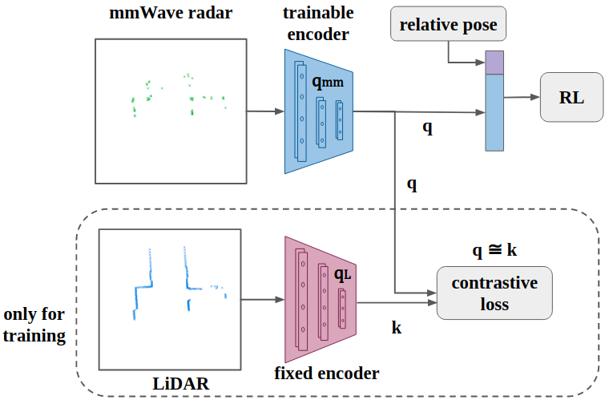
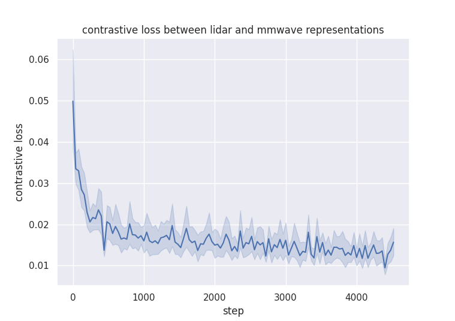
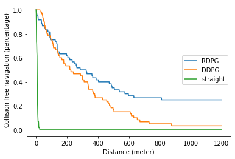

Abstract
Deep reinforcement learning (RL), where the agent learns from mistakes, has been successfully applied to a variety of tasks. With the aim of learning collision-free policies for unmanned vehicles, deep RL has been used for training with various types of data, such as colored images, depth images, and LiDAR point clouds, without the use of classic map--localize--plan approaches. However, existing methods are limited by their reliance on cameras and LiDAR devices, which have degraded sensing under adverse environmental conditions (e.g., smoky environments). In response, we propose the use of single-chip millimeter-wave (mmWave) radar, which is lightweight and inexpensive, for learning-based autonomous navigation. However, because mmWave radar signals are often noisy and sparse, we propose a cross-modal contrastive learning for representation (CM-CLR) method that maximizes the agreement between mmWave radar data and LiDAR data in the training stage. We evaluated our method in real-world robot compared with 1) a method with two separate networks using cross-modal generative reconstruction and an RL policy and 2) a baseline RL policy without cross-modal representation. Our proposed end-to-end deep RL policy with contrastive learning successfully navigated the robot through smoke-filled maze environments and achieved better performance compared with generative reconstruction methods, in which noisy artifact walls or obstacles were produced. All pretrained models and hardware settings are open access for reproducing this study and can be obtained at https://arg-nctu.github.io/projects/deeprl-mmWave.html.
Video
Generative reconstruction
range were ploted on cartesian coordinate system
Contrastive learning
Contrastive learning structure
The network is trained for 20 episodes with our dataset
Deep reinforcement learning
model structure

Episode return reward with standard deviation of agent training using RDPG and DDPG.

Performance evaluation of agents trained using different RL algorithms. We considered a safe navigation without collision a trial. A trial was terminated when the robot collided walls or obstacles, reached to a maximum distance of 1.2 kilometers, or manually stopped by human intervention. The travelled distance was estimated by the wheel encoders provided by the Clearpath Husky robots.
Datasets
- rosbag
The original recorded format. All data are recorded in realtime. If user are familiar with
ROS. There is rosbga API to extract data from bags
or using commandline to play data in
realtime. Rviz can help the visualization.
click
here to download all rosbags.
- hdf5
Data in rosbags has been transfer to numpy arrays, stored in hdf5 format and
organized to 5Hz framerate. Including following data:
- LiDAR
3D point cloud
1D range
- mmWave radar
3D point cloud
1D
range
- human demonstration action
- wheel oddmetry
User can use h5pyViewer to check the
data.

click
here to download all hdf5 data
- pickle
Data in hdf5 dataset has been re-organized to transition style and calculated the reward
inorder to train RL
algorithm. Every pkl file contain 512 frame of transition data. Each transition contains the
following data.
- mm_scan
- laser_scan
- pos_diff
- action
- reward
- next_mm_scan
- next_laser_scan
- next_pos_diff
click
here to download all transition data
- All data
The original recorded format. All data are recorded in realtime. If user are familiar with
ROS. There is rosbga API to extract data from bags
or using commandline to play data in
realtime. Rviz can help the visualization.
click
here to download all rosbags.
Data in rosbags has been transfer to numpy arrays, stored in hdf5 format and organized to 5Hz framerate. Including following data:
3D point cloud
1D range
3D point cloud
1D range
User can use h5pyViewer to check the data.
click here to download all hdf5 data
Data in hdf5 dataset has been re-organized to transition style and calculated the reward inorder to train RL algorithm. Every pkl file contain 512 frame of transition data. Each transition contains the following data.
click here to download all transition data
Bibtex
@article{huang2021cross,
title={Cross-Modal Contrastive Learning of Representations for Navigation Using Lightweight, Low-Cost Millimeter Wave Radar for Adverse Environmental Conditions},
author={Huang, Jui-Te and Lu, Chen-Lung and Chang, Po-Kai and Huang, Ching-I and Hsu, Chao-Chun and Huang, Po-Jui and Wang, Hsueh-Cheng and others},
journal={IEEE Robotics and Automation Letters},
volume={6},
number={2},
pages={3333--3340},
year={2021},
publisher={IEEE}
}